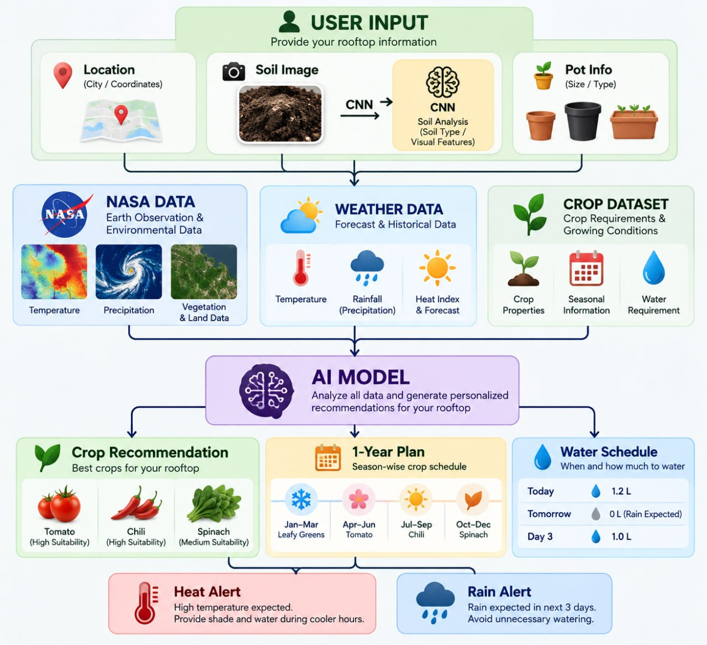

From NASA’s view of Earth to your rooftop.
NASAgric combines Earth-observation data, weather intelligence, soil analysis and crop knowledge to create personalized farming guidance for urban rooftops.
Independent project using NASA Earth-observation data.
Rooftop growers are guessing
Urban rooftop farming is growing in popularity, but most existing solutions give general agricultural information rather than recommendations for your rooftop.
- Choosing suitable crops for their rooftop
- Knowing if the soil suits a particular crop
- Knowing when and how much to water
- Protecting plants from excessive heat
- Planning crops around seasonal conditions
- Making decisions as the weather changes
How it works
Four steps from a rooftop to a plan. Select a step to see what happens inside it.

Why NASA data matters
NASAgric uses Earth-observation and environmental data to provide broader environmental context for rooftop-level decisions.
NASA data meets your rooftop
Large-scale environmental data becomes useful only when it changes a decision. Each card shows the data and what it changes for your rooftop.
| Data category | NASA source | Used for |
|---|---|---|
| Temperature | NASA POWER | Crop suitability and season plan |
| Precipitation | GPM IMERG | Rain pattern and water schedule |
| Vegetation and land data | MODIS / VIIRS (NDVI) | Vegetation and environmental indicators |
Sample values for demonstration. No live NASA measurements are shown until a data API is connected.
From space to soil
Earth-observation context and your rooftop details go into one AI engine, which returns a plan for your rooftop and explains why.
AI components
CNN model
Soil image analysis
Recommendation model
Crop suitability prediction
Decision engine
Combines environmental, weather, soil, crop and user information
Explainable recommendation
Shows why a crop or action was recommended
All four stages run on sample data in this frontend demo.
Your rooftop in context
A regional view of where your rooftop sits, with the environmental layers that feed its recommendations. Demo Data
Tell us about your rooftop
No account or backend needed. The demo uses sample data.
Good afternoon 👋
Here’s your rooftop intelligence. Demo Analysis
Your best crops Demo Analysis
Smart water intelligence Demo Data
3-day weather and alerts Demo Data
Rooftop health score
Your 1-year rooftop farming plan
What it helps you do
- Select suitable crops
- Reduce unnecessary watering
- Prepare for heat
- Respond to rainfall
- Plan farming seasonally
- Make data-driven decisions
USER → NASA + WEATHER + SOIL + CROP DATA → AI → PERSONALIZED ROOFTOP FARMING PLAN
Built by Team NASAgric
- Md. Mahmud Khan Munna
- Md Tanbir Hossain Shehab
- Shamsul Huda Md Nahian
- Bushra Mohammed Harun
- Sree Sourav Chandra Das